ECES T580 Lab 1
Bhautik (Brian) Amin
Contents
Part 1.1.1 Download sequence with accession number and load into MATLAB
Retrieve sequence, save to file
clc;close all; clear;
Check if file already exists, if it doesn't. Download file from genbank
if exist('nm_000520.txt') == 2 % Bring file into matlab s = genbankread('nm_000520.txt'); else % Grab file and then bring it into matlab getgenbank('nm_000520', 'toFile', 'nm_000520.txt'); s = genbankread('nm_000520.txt'); end
Extract sequence
seq = getgenbank('nm_000520', 'SequenceOnly', true);
Part 1.2.1 Getting basic statistics
Format long sequence output
seqdisp(s.Sequence)
ans =
46×71 char array
' 1 TCACATCACA ACGACTTGTG GTTTTAATCC TCCGTTTTTC TGCTTCTGAA GTTACTTCAG'
' 61 CCTGGCAAGT CCTTTACCTC CCCGTAGGCC TGGCGAGCTG CATCACAACA TTCAAGATTC'
' 121 ACCCTAGAGC CATCTGGGAA ACTTTCTTCT CCAGGTCGCC CTGCGTCCTC GCCTCCCCAC'
' 181 CCCGTTCTTC TCGAGTCGGG TGAGCTGTCT AGTTCCATCA CGGCCGGCAC GGCCGCAGGG'
' 241 GTGGCCGGTT ATTTACTGCT CTACTGGGCC CGTGAACAGT CTGGCGAGCC GAGCAGTTGC'
' 301 CGACGCCCGG CACAATCCGC TGCACGTAGC AGGAGCCTCA GGTCCAGGCC GGAAGTGAAA'
' 361 GGGCAGGGTG TGGGTCCTCC TGGGGTCGCA GGCGCAGAGC CGCCTCTGGT CACGTGATTC'
' 421 GCCGATAAGT CACGGGGGCG CCGCTCACCT GACCAGGGTC TCACGTGGCC AGCCCCCTCC'
' 481 GAGAGGGGAG ACCAGCGGGC CATGACAAGC TCCAGGCTTT GGTTTTCGCT GCTGCTGGCG'
' 541 GCAGCGTTCG CAGGACGGGC GACGGCCCTC TGGCCCTGGC CTCAGAACTT CCAAACCTCC'
' 601 GACCAGCGCT ACGTCCTTTA CCCGAACAAC TTTCAATTCC AGTACGATGT CAGCTCGGCC'
' 661 GCGCAGCCCG GCTGCTCAGT CCTCGACGAG GCCTTCCAGC GCTATCGTGA CCTGCTTTTC'
' 721 GGTTCCGGGT CTTGGCCCCG TCCTTACCTC ACAGGGAAAC GGCATACACT GGAGAAGAAT'
' 781 GTGTTGGTTG TCTCTGTAGT CACACCTGGA TGTAACCAGC TTCCTACTTT GGAGTCAGTG'
' 841 GAGAATTATA CCCTGACCAT AAATGATGAC CAGTGTTTAC TCCTCTCTGA GACTGTCTGG'
' 901 GGAGCTCTCC GAGGTCTGGA GACTTTTAGC CAGCTTGTTT GGAAATCTGC TGAGGGCACA'
' 961 TTCTTTATCA ACAAGACTGA GATTGAGGAC TTTCCCCGCT TTCCTCACCG GGGCTTGCTG'
'1021 TTGGATACAT CTCGCCATTA CCTGCCACTC TCTAGCATCC TGGACACTCT GGATGTCATG'
'1081 GCGTACAATA AATTGAACGT GTTCCACTGG CATCTGGTAG ATGATCCTTC CTTCCCATAT'
'1141 GAGAGCTTCA CTTTTCCAGA GCTCATGAGA AAGGGGTCCT ACAACCCTGT CACCCACATC'
'1201 TACACAGCAC AGGATGTGAA GGAGGTCATT GAATACGCAC GGCTCCGGGG TATCCGTGTG'
'1261 CTTGCAGAGT TTGACACTCC TGGCCACACT TTGTCCTGGG GACCAGGTAT CCCTGGATTA'
'1321 CTGACTCCTT GCTACTCTGG GTCTGAGCCC TCTGGCACCT TTGGACCAGT GAATCCCAGT'
'1381 CTCAATAATA CCTATGAGTT CATGAGCACA TTCTTCTTAG AAGTCAGCTC TGTCTTCCCA'
'1441 GATTTTTATC TTCATCTTGG AGGAGATGAG GTTGATTTCA CCTGCTGGAA GTCCAACCCA'
'1501 GAGATCCAGG ACTTTATGAG GAAGAAAGGC TTCGGTGAGG ACTTCAAGCA GCTGGAGTCC'
'1561 TTCTACATCC AGACGCTGCT GGACATCGTC TCTTCTTATG GCAAGGGCTA TGTGGTGTGG'
'1621 CAGGAGGTGT TTGATAATAA AGTAAAGATT CAGCCAGACA CAATCATACA GGTGTGGCGA'
'1681 GAGGATATTC CAGTGAACTA TATGAAGGAG CTGGAACTGG TCACCAAGGC CGGCTTCCGG'
'1741 GCCCTTCTCT CTGCCCCCTG GTACCTGAAC CGTATATCCT ATGGCCCTGA CTGGAAGGAT'
'1801 TTCTACATAG TGGAACCCCT GGCATTTGAA GGTACCCCTG AGCAGAAGGC TCTGGTGATT'
'1861 GGTGGAGAGG CTTGTATGTG GGGAGAATAT GTGGACAACA CAAACCTGGT CCCCAGGCTC'
'1921 TGGCCCAGAG CAGGGGCTGT TGCCGAAAGG CTGTGGAGCA ACAAGTTGAC ATCTGACCTG'
'1981 ACATTTGCCT ATGAACGTTT GTCACACTTC CGCTGTGAAT TGCTGAGGCG AGGTGTCCAG'
'2041 GCCCAACCCC TCAATGTAGG CTTCTGTGAG CAGGAGTTTG AACAGACCTG AGCCCCAGGC'
'2101 ACCGAGGAGG GTGCTGGCTG TAGGTGAATG GTAGTGGAGC CAGGCTTCCA CTGCATCCTG'
'2161 GCCAGGGGAC GGAGCCCCTT GCCTTCGTGC CCCTTGCCTG CGTGCCCCTG TGCTTGGAGA'
'2221 GAAAGGGGCC GGTGCTGGCG CTCGCATTCA ATAAAGAGTA ATGTGGCATT TTTCTATAAT'
'2281 AAACATGGAT TACCTGTGTT TAAAAAAAAA AGTGTGAATG GCGTTAGGGT AAGGGCACAG'
'2341 CCAGGCTGGA GTCAGTGTCT GCCCCTGAGG TCTTTTAAGT TGAGGGCTGG GAATGAAACC'
'2401 TATAGCCTTT GTGCTGTTCT GCCTTGCCTG TGAGCTATGT CACTCCCCTC CCACTCCTGA'
'2461 CCATATTCCA GACACCTGCC CTAATCCTCA GCCTGCTCAC TTCACTTCTG CATTATATCT'
'2521 CCAAGGCGTT GGTATATGGA AAAAGATGTA GGGGCTTGGA GGTGTTCTGG ACAGTGGGGA'
'2581 GGGCTCCAGA CCCAACCTGG TCACAGAAGA GCCTCTCCCC CATGCATACT CATCCACCTC'
'2641 CCTCCCCTAG AGCTATTCTC CTTTGGGTTT CTTGCTGCTT CAATTTTATA CAACCATTAT'
'2701 TTAAATATTA TTAAACACAT ATTGTTCTCT AGGAAAAAAA AAAAAAAAAA A '
Count nucleotides in sequence
[seq_counts] = basecount(s.Sequence)
seq_counts =
struct with fields:
A: 593
C: 750
G: 716
T: 692
Plot density of nucleotides along sequence
figure(1) seq_density_n20 = ntdensity(s.Sequence)
seq_density_n20 =
struct with fields:
A: [1×2751 double]
C: [1×2751 double]
G: [1×2751 double]
T: [1×2751 double]
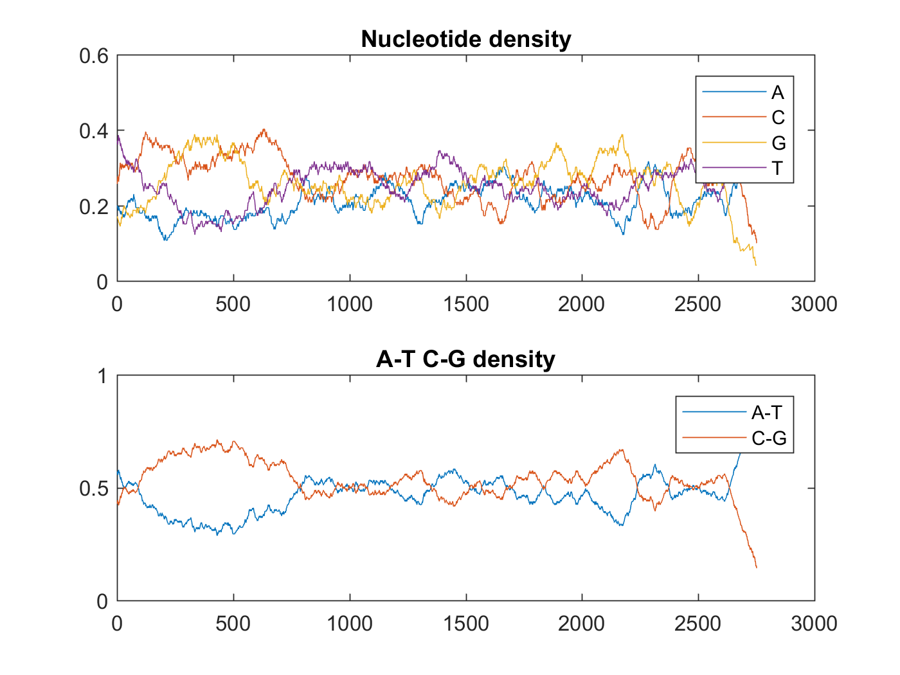 Count dimers in the nucleotide sequence
figure(2) [Dimers, Percent] = dimercount(s.Sequence, 'chart', 'pie')
Dimers =
struct with fields:
AA: 137
AC: 145
AG: 185
AT: 125
CA: 184
CC: 235
CG: 90
CT: 241
GA: 171
GC: 178
GG: 220
GT: 147
TA: 101
TC: 192
TG: 221
TT: 178
Percent =
0.0498 0.0527 0.0673 0.0455
0.0669 0.0855 0.0327 0.0876
0.0622 0.0647 0.0800 0.0535
0.0367 0.0698 0.0804 0.0647
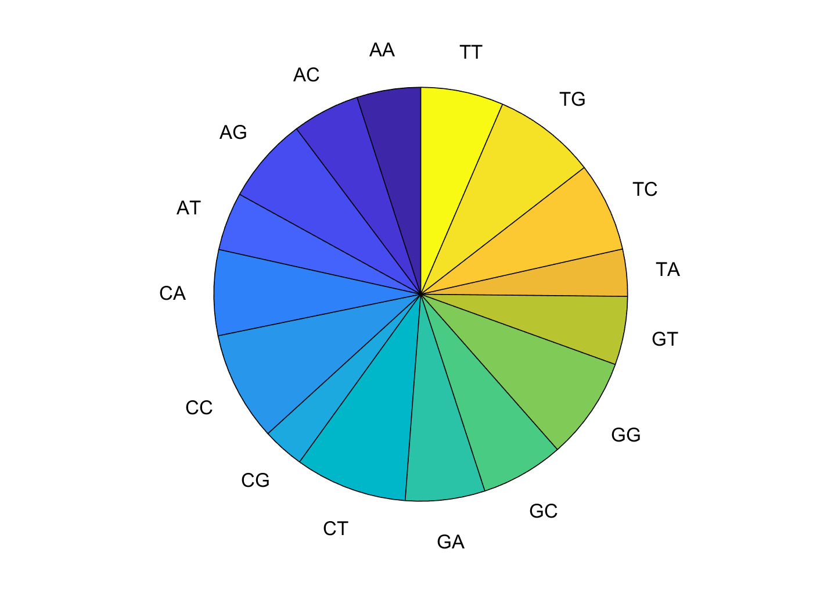 Count 3-mer in nucleotide sequence
trimer = nmercount(s.Sequence, 3)
trimer =
64×2 cell array
'ctg' [95]
'cct' [81]
'tgg' [77]
'gag' [68]
'ggc' [68]
'ccc' [66]
'tcc' [66]
'agg' [65]
'cag' [65]
'tct' [63]
'gct' [62]
'ctc' [61]
'ctt' [61]
'gcc' [59]
'ttc' [58]
'gga' [55]
'tga' [55]
'cca' [54]
'ggg' [53]
'gtg' [51]
'ttt' [51]
'cac' [50]
'tgt' [48]
'aaa' [46]
'aca' [46]
'tca' [46]
'agc' [45]
'acc' [44]
'ggt' [44]
'gtc' [43]
'aga' [42]
'gaa' [42]
'ttg' [42]
'tgc' [41]
'cat' [39]
'gca' [38]
'gac' [37]
'act' [35]
'tat' [35]
'aag' [34]
'att' [34]
'ccg' [34]
'agt' [33]
'atg' [33]
'gtt' [32]
'caa' [30]
'aac' [29]
'ata' [29]
'atc' [29]
'tac' [29]
'aat' [27]
'tta' [27]
'cgg' [25]
'cgc' [24]
'cta' [24]
'gat' [24]
'cgt' [22]
'gta' [21]
'acg' [20]
'cga' [19]
'gcg' [19]
'taa' [19]
'tag' [18]
'tcg' [17]
Try different window sizes for ntdensity function Default is length(seq)/20 Lets try doing length(seq)/10, using the round() function since the window length must be an integer
figure(3)
seq_density_n10 = ntdensity(s.Sequence, 'WINDOW',round(length(s.Sequence)/10))
seq_density_n10 =
struct with fields:
A: [1×2751 double]
C: [1×2751 double]
G: [1×2751 double]
T: [1×2751 double]
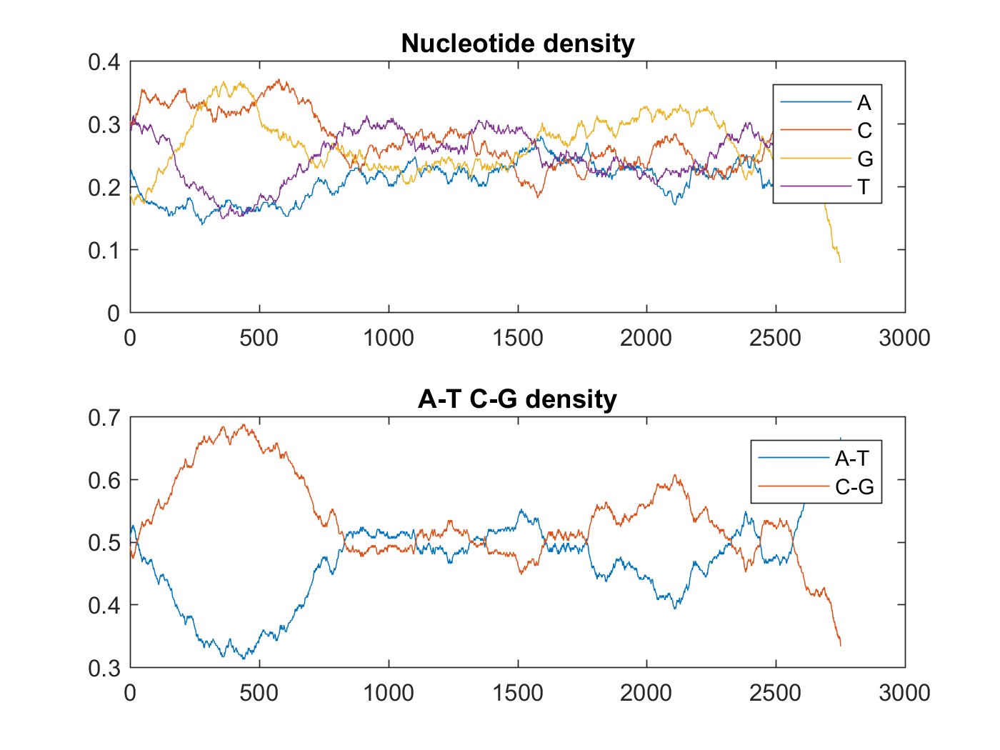 And we can try length(seq)/30
figure(4)
seq_density_n30 = ntdensity(s.Sequence, 'WINDOW',round(length(s.Sequence)/30))
seq_density_n30 =
struct with fields:
A: [1×2751 double]
C: [1×2751 double]
G: [1×2751 double]
T: [1×2751 double]
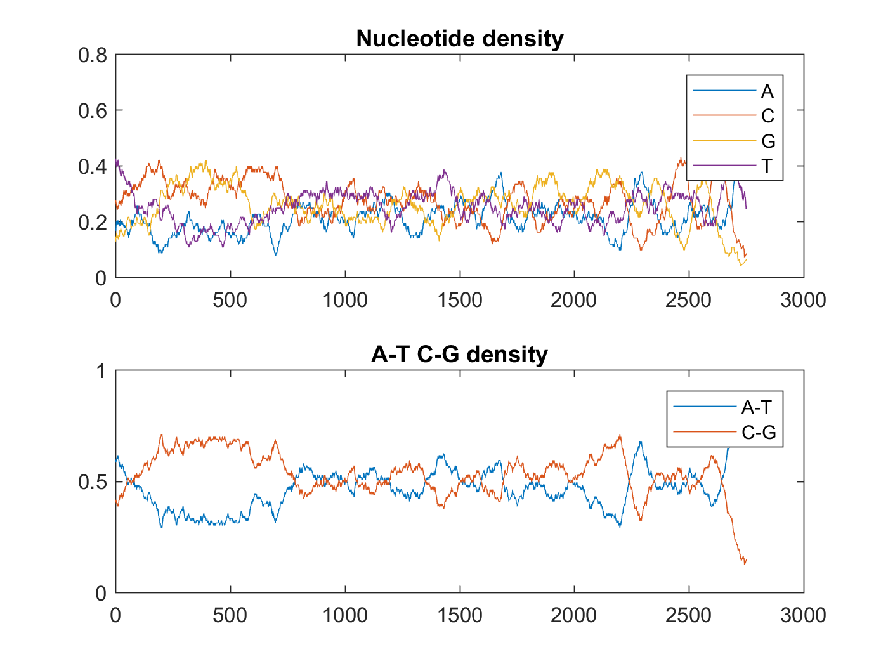 The window sizes for each of these three values are as follows: length(seq)/10 = ~275 length(seq)/20 = ~137 length(seq)/30 ~ 91 The advance of having the larger window size is that the image is more more clear to see (A bit zoomed in). However larger window sizes require you to pan to look at specfic points of interest. Smaller window sizes allow for one to see large amounts of data within one space
Part 1.3.1: Condon Count and ORF
Return codon counts for each of the six reading frames Plot the results in a heat map
figure(5) rlcodons_1 = codoncount(s.Sequence, 'frame', 1, 'figure', true); title('Frame 1') figure(6) rlcodons_2 = codoncount(s.Sequence, 'frame', 2, 'figure', true); title('Frame 2') figure(7) rlcodons_3 = codoncount(s.Sequence, 'frame', 3, 'figure', true); title('Frame 3')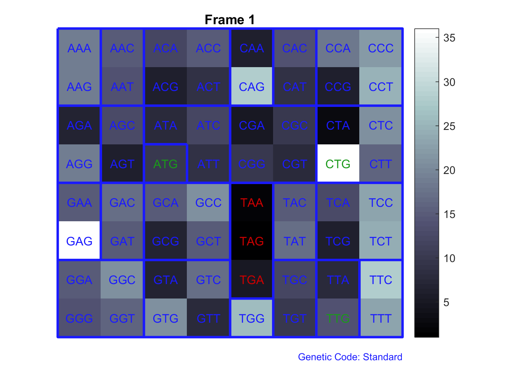 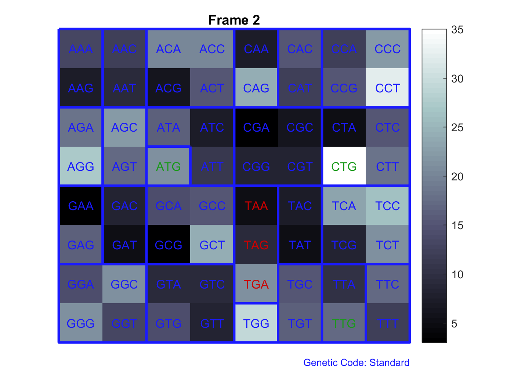 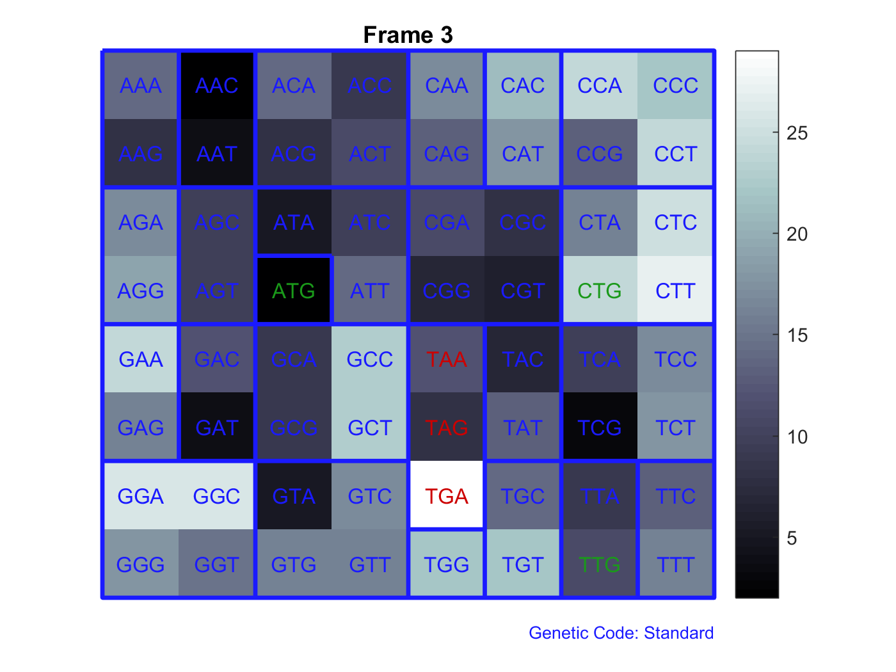
To get the other 3 frames we take the reverse complement
figure(8) rlcodons_4 = codoncount(s.Sequence, 'Reverse',true,'frame', 1, 'figure', true); title('Frame 4') figure(9) rlcodons_5 = codoncount(s.Sequence, 'Reverse',true,'frame', 2, 'figure', true); title('Frame 5') figure(10) rlcodons_6 = codoncount(s.Sequence, 'Reverse',true,'frame', 3, 'figure', true); title('Frame 6')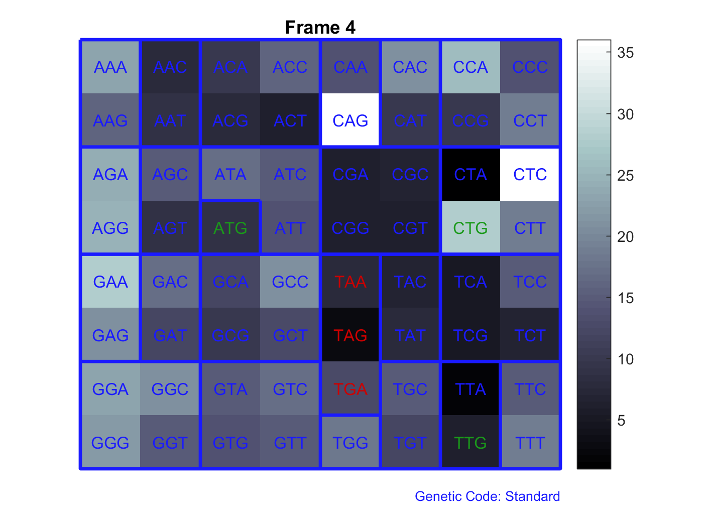 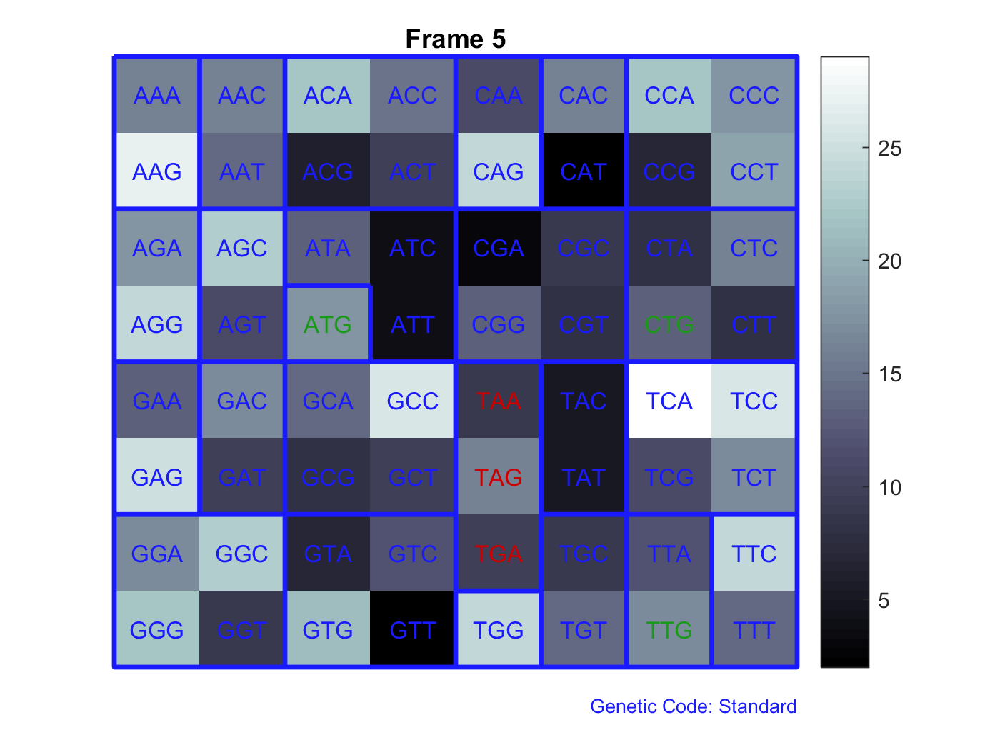 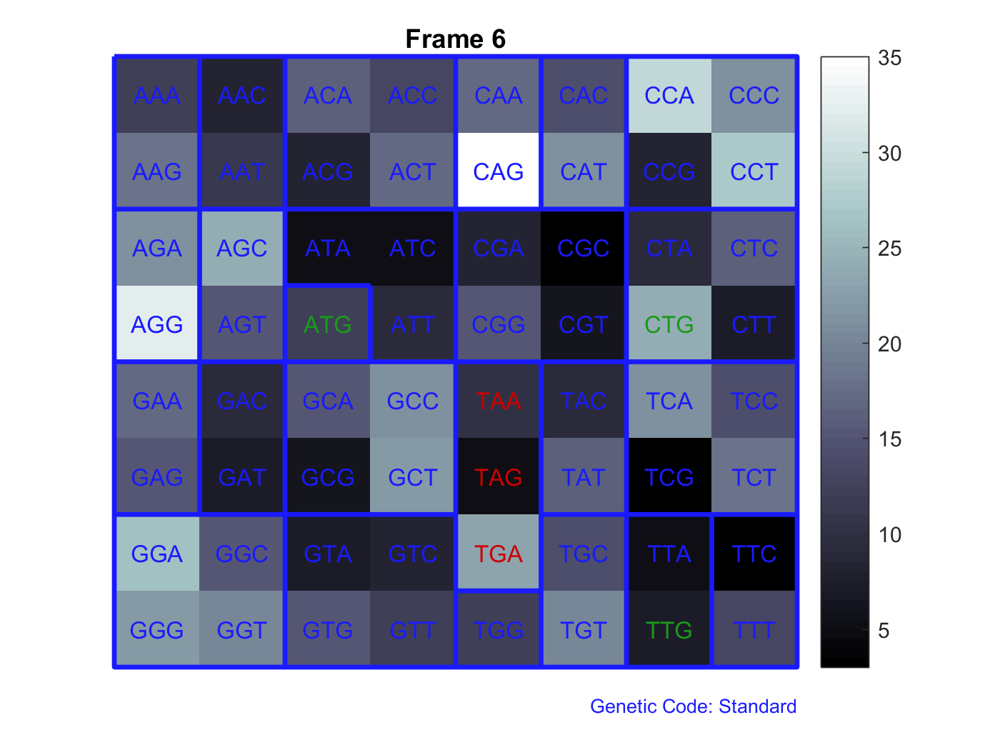
Part 1.3.1: Find ORFs based on length
Find ORFS of length > 50 in Frame 1 of the given sequence
orf_min_50 = seqshoworfs(s.Sequence, 'Frames', 1, 'MinimumLength', 50);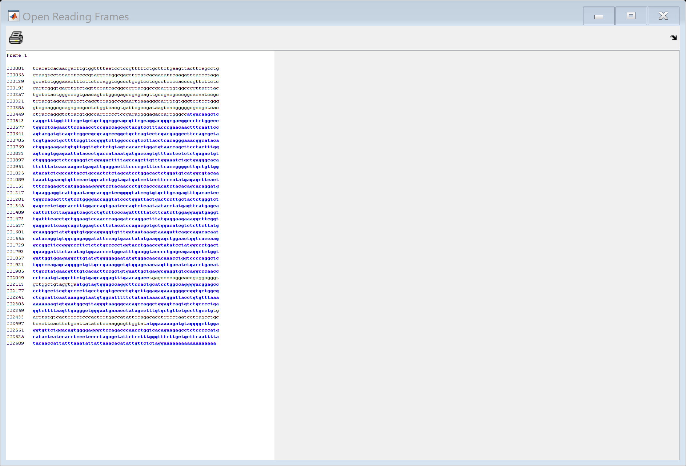
Find ORFS of length > 500 in Frame 1 of the given sequence
orf_min_500 = seqshoworfs(s.Sequence, 'Frames', 1, 'MinimumLength', 500);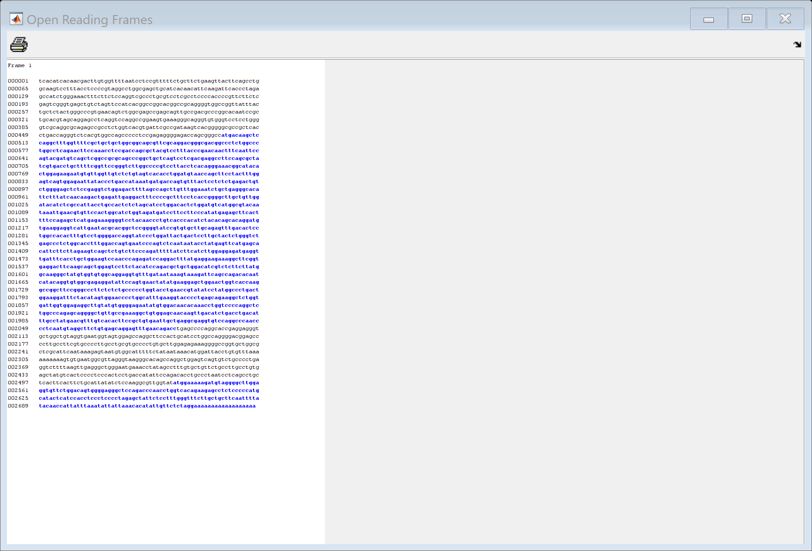
Part 1.3.2 Finding optimum threshold for ORFs
we can find the optimum length of ORF
Get total number of stop codons within each frame
total1 = rlcodons_1.TGA + rlcodons_1.TAG + rlcodons_1.TAA; total2 = rlcodons_2.TGA + rlcodons_2.TAG + rlcodons_2.TAA; total3 = rlcodons_3.TGA + rlcodons_3.TAG + rlcodons_3.TAA; total4 = rlcodons_4.TGA + rlcodons_4.TAG + rlcodons_4.TAA; total5 = rlcodons_5.TGA + rlcodons_5.TAG + rlcodons_5.TAA; total6 = rlcodons_6.TGA + rlcodons_6.TAG + rlcodons_6.TAA; totalStop = total1 + total2 + total3 + total4 + total5 + total6
totalStop = 189
Get total number of codons in the sequence
c1 = struct2cell(rlcodons_1); c2 = struct2cell(rlcodons_2); c3 = struct2cell(rlcodons_3); c4 = struct2cell(rlcodons_4); c5 = struct2cell(rlcodons_5); c6 = struct2cell(rlcodons_6); TotalCodons1 = CalculateTotal(c1, length(c1)); TotalCodons2 = CalculateTotal(c2, length(c2)); TotalCodons3 = CalculateTotal(c3, length(c3)); TotalCodons4 = CalculateTotal(c4, length(c4)); TotalCodons5 = CalculateTotal(c5, length(c5)); TotalCodons6 = CalculateTotal(c6, length(c6)); TotalCodons = TotalCodons1 + TotalCodons2 + TotalCodons3 + TotalCodons4 + TotalCodons5 + TotalCodons6
Find optimal length
k = log(0.05) / log(1 - (totalStop/TotalCodons))
% must be a multiple of three
k = k + 1 + 1
k = 85.6391 k = 87.6391
Find ORFs with the given estimated numberorf_min_50 = seqshoworfs(s.Sequence, 'Frames', 1, 'MinimumLength', 50);
orf_estimated = seqshoworfs(s.Sequence, 'Frames', 1, 'MinimumLength', k);
General Functions
Quick function to calculate total within frame cell array
function total = CalculateTotal(array, length) total = 0; for n=1:length total = total + array{n}; end end
TotalCodons =
5498